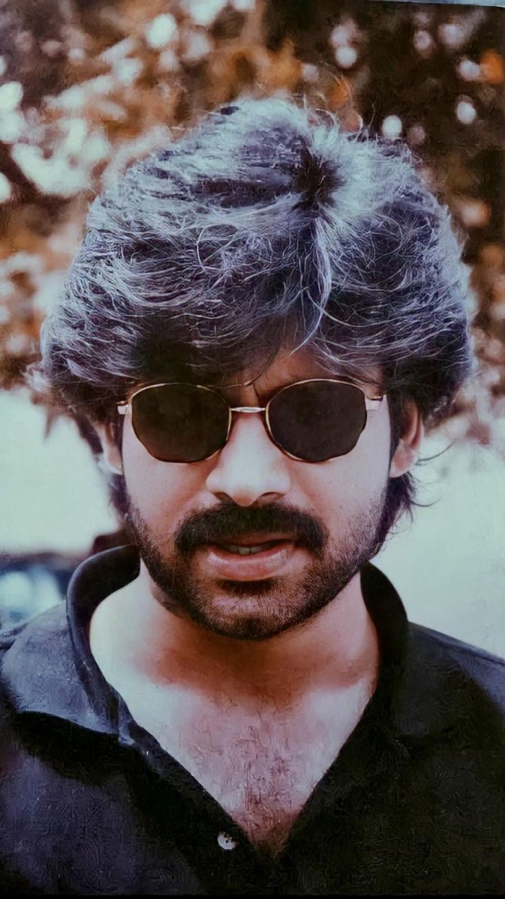
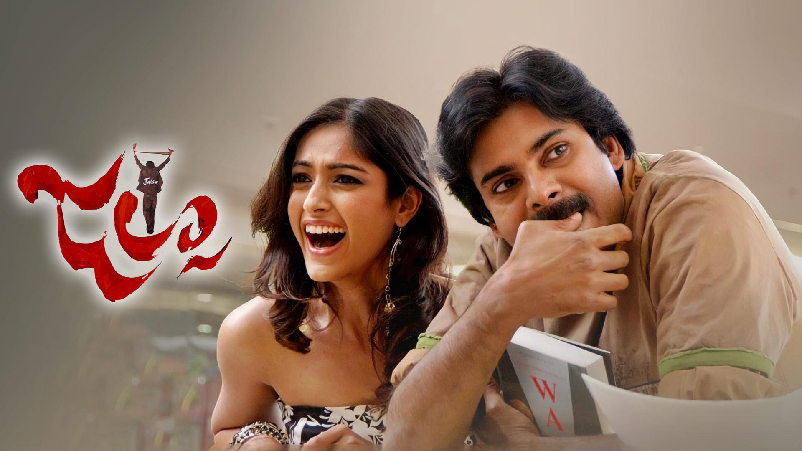

KONIDELA PAWAN KALYAN

Article
Konidela Pawan Kalyan (born Konidela Sri Kalyan Kumar; 2 September
1971 ) is an Indian politician, actor, serving as the
11th Deputy Chief Minister of Andhra Pradesh since June 2024.
He is also the Minister of Panchayat Raj, Rural Development and Rural
Water Supply; Environment, Forest, Science and Technology in the
Government of Andhra Pradesh as MLA representing the Pithapuram
constituency. He is the founder and president of the Janasena Party.
As an actor, Kalyan is known for his distinctive style and
mannerisms in Telugu cinema. He enjoys a huge fanbase across the Telugu
states, often described as "unfathomable," "fiercely loyal," and akin to a
"cult following." He is among the highest-paid actors in Indian cinema and
has been featured in Forbes India's Celebrity 100 list multiple times
since 2012. He is the recipient of a Filmfare Award and a SIIMA Award
among other accolades.
Kalyan made his acting debut in the
1996 film Akkada Ammayi Ikkada Abbayi. Then, he had a streak of six
consecutive hits, among which Tholi Prema (1998), Thammudu (1999), Badri
(2000), and Kushi (2001) became back-to-back blockbusters. These films
established Kalyan as a youth icon with a massive following distinct from
his elder brother Chiranjeevi's fanbase. In 2001, he became the first ever
South Indian brand ambassador for Pepsi. Kalyan later faced a slump, yet
his popularity kept soaring despite the flops. He made a comeback with
Jalsa (2008), the highest-grossing Telugu film of that year, and continued
with hits like Gabbar Singh (2012), Attarintiki Daredi (2013), Gopala
Gopala (2015), Vakeel Saab (2021), and Bheemla Nayak (2022). He received
the Filmfare Award for Best Actor for Gabbar Singh. Both Kushi and
Attarintiki Daredi held the record for the highest-grossing Telugu film of
its era.
Kalyan holds a black belt in Karate. In 1997, he was awarded the title
"Pawan" by the Isshin-ryū Karate Association after a public martial arts
demonstration. He practices various martial arts, which he regularly
showcases in his films both as a performer and an action choreographer. He
is known as "Power Star" among his fans and the media. Kalyan is also
recognized for his extensive philanthropic work, supporting various social
causes. He has offered financial assistance to both individuals and
organizations in need. In 2007, he established the charity Common Man
Protection Force.
In March 2014, Pawan Kalyan founded the Janasena Party (JSP). Although he
chose not to contest the 2014 elections, his support and campaigns were
pivotal in securing victory for the TDP-BJP alliance in Andhra Pradesh. He
later brought national attention to the chronic kidney disease crisis in
Uddanam, and led protests against forced land acquisition, and illegal
mining in reserved forests. In 2019, JSP contested its first elections,
winning one MLA seat with around 6% of the vote. Following this, Kalyan
and JSP focused on issues like farmer welfare, illegal sand mining,
women's safety, and land encroachment. In 2023, he launched a state-wide
tour in his customized vehicle 'Varahi' to connect with voters. In the
2024 elections, Kalyan played a key role in forming an alliance between
JSP, TDP, and BJP, which led to a landslide victory. Janasena won each of
the 21 MLA seats and 2 MP seats it contested. Kalyan was elected from the
Pithapuram constituency by a margin of over 70,000 votes, subsequently
becoming the deputy chief minister.
Early life
Pawan Kalyan was born as Konidela Kalyan Kumar on 2 September 1971 in a
Telugu family to Konidela Venkata Rao and Anjana Devi in Bapatla, Andhra
Pradesh. Venkata Rao worked as an excise police constable and was
transferred on a regular basis.
Kalyan was educated at the St. Joseph's High School in Nellore and later
in Madras (now Chennai). In 1997, he was awarded the title "Pawan" by the
Isshin-ryū Karate Association after a public martial arts demonstration.
He also holds a black belt in Karate.
Acting Career
1996-1997: Early work
Kalyan made his acting debut in 1996 with Akkada Ammayi Ikkada Abbayi
directed by E. V. V. Satyanarayana. It was produced by Allu Aravind under
Geeta Arts Banner, and co-starred Supriya Yarlagadda, granddaughter of
Akkineni Nageswara Rao. The film employed a unique marketing campaign
prior to its release. Initially, posters featuring Kalyan were released
with the question, "Who is this guy?". Later, before the film's release,
posters declaring "This is our Kalyan" further heightened audience
interest. Released in October 1996, the film was a moderate success at the
box-office. Kalyan’s performance and martial arts skills received
significant attention.
His second film Gokulamlo Seeta (1997), a drama film released the
following year. It was directed by Muthyala Subbaiah and starred Kalyan
alongside Raasi and Harish. In the film, Kalyan plays a spoiled rich youth
who transforms his reckless ways and fights against societal and familial
opposition to win his love. Gokulamlo Seeta was the first film where
Kalyan was credited as 'Pawan Kalyan' after he was awarded the title
"Pawan" in March 1997. It was a commercial success.
Kalyan's third film was Suswagatham (1998) directed by Bhimaneni Srinivasa
Rao and produced by R. B. Choudary under the Super Good Films banner. It
starred Kalyan and Devayani (in her Telugu debut), with music composed by
S. A. Rajkumar. Kalyan was first credited with the title Power Star in
this film. In the film, Kalyan played a young man who loses everything due
to his blind love for a girl. His performance in the film was critically
acclaimed. Suswagatham sowed the seeds for Kalyan's rise to stardom. The
film became a super hit at the box office.
1998-2001: Success streak and stardom
 Kalyan's next film was Tholi Prema (1998), directed by A. Karunakaran and
co-starring Keerthi Reddy with music by Deva. Karunakaran saw Pawan
Kalyan's photo on a Telugu film magazine cover in Chennai and thought he
was perfect for the lead in his romantic film. After sharing the script
with Kalyan, Kalyan introduced him to producer G. V. G. Raju, who had
worked with him on Gokulamlo Seeta. The film was a major hit, launching
Kalyan into stardom and becoming a classic romantic film in Telugu cinema.
Kalyan's next film was Tholi Prema (1998), directed by A. Karunakaran and
co-starring Keerthi Reddy with music by Deva. Karunakaran saw Pawan
Kalyan's photo on a Telugu film magazine cover in Chennai and thought he
was perfect for the lead in his romantic film. After sharing the script
with Kalyan, Kalyan introduced him to producer G. V. G. Raju, who had
worked with him on Gokulamlo Seeta. The film was a major hit, launching
Kalyan into stardom and becoming a classic romantic film in Telugu cinema.
It won the National Film Award for Best Feature Film in Telugu, six state
Nandi Awards, and was featured at the 30th International Film Festival of
India. The film was remade in Kannada as
Preethsu Thappenilla (2000) and in Hindi as
Mujhe Kucch Kehna HaiMujhe Kucch Kehna Hai (2001).
In November 1998, there were reports of Kalyan collaborating with
Malayalam director Fazil for a project to be produced by G. V. G. Raju,
who had earlier produced Tholi Prema. However, his next film turned out to
be Thammudu, where he played the role of a kickboxer. Released in July
1999, Thammudu was written and directed by P. A. Arun Prasad. The film
collected a distributor share of ₹9.25–9.46 crore, emerging as a
blockbuster and generating a profit of over ₹4 crores for buyers. It
became the second-highest-grossing film in the Nizam region after
Choodalani Vundi (1998). Kalyan's performance as a youth competing in a
kickboxing contest was widely acclaimed. The film's success led to it
being remade in Tamil as Badri (2001), in Kannada as Yuvaraja (2001) and
in Bengali as Champion (2003).
Next, Kalyan acted in Puri
Jagannadh's first directorial venture, Badri (2000). It starred debutants
Ameesha Patel and Renu Desai (whom he would later marry). It was produced
by T. Trivikrama Rao and the music was composed by Ramana Gogula. The film
became a blockbuster at the box office. Badri played a crucial role in
expanding Pawan Kalyan's appeal from class audiences, who admired his
earlier hits to a broader mass audience. The intense scenes between Pawan
Kalyan and Prakash Raj remain a significant highlight in Pawan's career.
The film's dialogues and songs were huge hits with the youth. The line
"Nuvvu Nanda aithe nenu Badri Badrinath" and songs like "Ye Chikitha" and
"Bangala Kathamlo" continued to be popular even after two decades. Badri
was later remade in Hindi as Shart: The Challenge (2004).
 Kalyan's next film was Kushi (2001) co-starring Bhumika. It was directed
by S. J. Surya and produced by A. M. Rathnam. Mani Sharma provided the
score and soundtrack. Kalyan also choreographed all the action sequences
in the film. Initially begun in 1999 as a bilingual along with its Tamil
version, also titled Kushi (2000), the Telugu version was delayed due to
Kalyan's prior commitment to Badri. It was a blockbuster at the box office
and went on to become the highest-grossing Telugu film ever at the time.
The film was critically acclaimed for its screenplay, music,
cinematography and especially the performance of Pawan Kalyan. Kushi was
the culmination of a streak of six consecutive hits for Pawan Kalyan and
his style, mannerisms and dialogues from the film were much imitated by
the youth.
Kalyan's next film was Kushi (2001) co-starring Bhumika. It was directed
by S. J. Surya and produced by A. M. Rathnam. Mani Sharma provided the
score and soundtrack. Kalyan also choreographed all the action sequences
in the film. Initially begun in 1999 as a bilingual along with its Tamil
version, also titled Kushi (2000), the Telugu version was delayed due to
Kalyan's prior commitment to Badri. It was a blockbuster at the box office
and went on to become the highest-grossing Telugu film ever at the time.
The film was critically acclaimed for its screenplay, music,
cinematography and especially the performance of Pawan Kalyan. Kushi was
the culmination of a streak of six consecutive hits for Pawan Kalyan and
his style, mannerisms and dialogues from the film were much imitated by
the youth.
The four consecutive blockbuster hits—Tholi Prema, Thammudu, Badri, and
Kushi—had a cult status among youth at the turn of the millennium. Pawan
Kalyan became a youth icon, setting trends in action sequences, style, and
fashion. These films gave him a massive fanbase, distinct from his elder
brother Chiranjeevi's. In 2001, Kalyan became the first South Indian brand
ambassador for Pepsi, while Chiranjeevi promoted Coca-Cola.
2002-2007:Directorial debut and career fluctuations
Kalyan's next film was Johnny (2003), which he wrote,
directed, and starred in alongside Renu Desai. Produced by Allu Aravind
with music by Ramana Gogula, the martial arts film featured Kalyan as a
coach who fights to fund his wife's cancer treatment. Johnny had the
highest theatrical distribution rights of ₹21 crore for a Telugu film at
the time and was released with over 250 prints worldwide. Kalyan's
clean-shaven look was a departure from his usual style which disappointed
many fans. Despite being Pawan Kalyan's first flop after six consecutive
hits, the film was praised for its stylish and grounded action
choreography. Kalyan's styling from the film became a trend, with Johnny
T-shirts, bandanas, armbands, and caps becoming very popular. It was also
screened at the International Film Festival of India.
In 2004, his film Gudumba Shankar was released. The film was directed by
Veera Shankar and produced by Kalyan's older brother Nagendra Babu under
Anjana Productions banner. Kalyan played the title role, wrote the
screenplay and choreographed three songs. The action scenes were also
conceived and choreographed by him. The film, starring Kalyan and Meera
Jasmine, received mixed reviews and was an average performer at the box
office. Kalyan's choreography of the realistic action scenes was praised.
His unique style, including wearing double pants, grabbed attention at the
time.
His next film Balu (2005) was A. Karunakaran's second directorial starring
Kalyan, after Tholi Prema. This film was produced by C. Aswini Dutt under
Vyjayanthi Movies banner. It co-starred Shriya, Neha Oberoi and Gulshan
Grover. Balu was extensively filmed in Delhi and Agra, with a special set
constructed near the Taj Mahal and another in Ramoji Film City, Hyderabad,
at a cost of ₹90 lakh. Pawan Kalyan wore a unique pant in the film's
flashback scenes, which he bought from Italy for about ₹2 lakh. These
pants later became a trend among the youth. Balu was the first Telugu film
to have a release in South Africa and became an average grosser at the box
office.
In May 2006, Bangaram, directed by Tamil filmmaker Dharani was released.
It starred Kalyan in the title role and Meera Chopra, Sanusha, Ashutosh
Rana, and Mukesh Rishi in supporting roles. Produced by A. M. Rathnam, who
had earlier produced Kushi (2001), the story follows Bangaram, a reporter
who dreams of working for the BBC. Notably, it was the first time in
Kalyan's career that he did not have a female lead opposite him. The film
received mixed to negative reviews, and Kalyan reportedly gave refunds to
the film's distributors due to its underperformance.
In March
2006, Pawan Kalyan’s second directorial venture, Satyagrahi (tagline:
Satyame Naa Ayudham; transl. Truth is my weapon), featuring him in the
role of a role of student union leader, was launched with a high-profile
event at Annapurna Studios. At the event, Kalyan expressed frustration
with societal problems and aimed to use Satyagrahi to highlight these
issues in a commercially appealing format. Producer A. M. Rathnam
announced that the film would be made in Telugu and Hindi, with a Bengali
dub. Despite initial enthusiasm and notable collaborators like P. C.
Sreeram and A. R. Rahman, the project was shelved. In October 2021, Kalyan
revealed that the film, inspired by Jayaprakash Narayan's Emergency
movement, was set aside to focus on real-life activism, finding it more
fulfilling to address social issues directly rather than through cinema.
Later that year, he appeared in Annavaram, directed by Bhimaneni Srinivasa
Rao, with Asin, and Sandhya were cast alongside him. The film was produced
under the Super Good Films banner and marked Kalyan's first role set in a
rural background. Pawan Kalyan plays the title role of Annavaram, a
blacksmith who, driven by his love for his sister, becomes a vigilante in
Hyderabad to dismantle the city's criminal underworld. Released in
December 2006, the film was an above-average grosser.
2008–2011: Continued career

Kalyan's next film was Jalsa (2008), written and directed by Trivikram
Srinivas. Jalsa marks the first collaboration between Pawan Kalyan and
Trivikram, a partnership that later extended to multiple projects in the
future. Mahesh Babu provided the voiceover for the film. In the film,
Pawan Kalyan plays Sanjay Sahu, an aerobics instructor with a troubled
past as a Naxalite. Kalyan's performance, especially his comic timing and
signature dialogues, played a significant role in the film's success.
Jalsa set multiple box office records on its opening day, including the
highest first-day collection for a Telugu film and the highest for any
South Indian film in a single state. It became the highest-grossing Telugu
film of 2008 and was praised for its lead performances, music, humour, and
witty dialogues. This marked Kalyan's first success after five consecutive
underperforming films.
Pawan Kalyan's next film, Puli (2010),
an action thriller, was written and directed by S. J. Surya and produced
by Singanamala Ramesh Babu with a budget of ₹40 crore. Initially titled
Komaram Puli, the film was renamed Puli on its second day of release due
to objections from Komaram Sony Rao, the grandson of tribal legend Komaram
Bheem, whose name had inspired the original title. The Nizam distribution
rights were sold to Geetha Arts for ₹12 crore, a record-breaking sum at
the time. Upon release, Puli was critically panned and ultimately became a
box office disaster.
In August 2010, an official announcement
was made that Kalyan was going to play a role in a movie about Jesus
Christ to be directed by Singeetam Srinivasa Rao. With a production cost
of $30 million, it was touted as the most expensive film to be ever made
in Indian cinema. The film was set to be shot in Israel and the
Palestinian Territories with an all-Indian cast, primarily featuring
children. It was reported that the producers spent time touring sites in
Jerusalem and around the Sea of Galilee and have approached the
Palestinian Authority about filming in Jericho and Bethlehem. Shooting for
the film was said to begin in Jerusalem in October 2010 and the film was
to be released in 2011. The film was said to include seven devotional
songs. It was to be a 195-minute film, with versions in four languages,
including English.
In 2011, Pawan Kalyan starred in Teen Maar,
directed by Jayanth C. Paranjee with a screenplay by Trivikram Srinivas.
It is a remake of the Hindi film Love Aaj Kal (2009). Kalyan plays dual
roles: Michael Velayudham, a carefree chef in Italy navigating modern
relationships, and Arjun Palwai, whose traditional 1980s love story
profoundly influences Michael's journey toward understanding the true
value of love and commitment. The film was an average grosser at the box
office.
Kalyan's next film was Vishnuvardhan's gangster drama
Panjaa (2011). Apart from Kalyan, it starred Sarah-Jane Dias, Anjali
Lavania, and Jackie Shroff. Kalyan showcased a new look for Panjaa,
combining a well-trimmed beard with his moustache. In the film, Kalyan
plays Jai, a loyal hitman for a powerful gangster, who is forced to go on
the run after a mission goes wrong. Released in December 2011, Panjaa
received mixed reviews from critics. It had a moderate reception from
overseas audiences but struggled to make an impact at the domestic box
office. Over time, it has been regarded as an underrated film in Telugu
cinema.
2012-2013: Comeback with blockbuster hits
Pawan Kalyan at the 18th International Children’s Film Festival India in
Hyderabad on 20 November 2013 In 2012, Pawan Kalyan starred in Gabbar
Singh, directed by Harish Shankar. This film, a remake of the Hindi hit
Dabangg (2010), made notable changes to the original screenplay and
characters. Kalyan played Venkataratnam Naidu, a police officer who takes
on the alias Gabbar Singh to combat a local thug's corrupt political
schemes. Gabbar Singh set new records for opening day, first weekend, and
first week collections in Tollywood, grossing around ₹110 crore worldwide.
It became the second-highest-grossing Telugu film at the time surpassing
Dookudu (2011), and emerging as the highest-grossing Telugu film of the
year. Kalyan's performance was acclaimed for its charisma and energy,
blending mass appeal with comedy, earning him the Filmfare Award for Best
Actor – Telugu, the SIIMA Award for Best Actor – Telugu, a CineMAA Award,
among other accolades.
Later in 2012, Kalyan appeared in Cameraman Gangatho Rambabu,
a political action film directed by Puri Jagannadh, marking their second
collaboration after 12 years. Kalyan played Rambabu, a
mechanic-turned-journalist who battles a corrupt politician. The film
faced political controversy and protests, leading to halted screenings in
Telangana and calls for a ban. In response, the producers made cuts and
modifications. Despite this, it was successful, earning ₹52 crore in its
opening weekend against a ₹25 crore budget.
In September 2013, Pawan Kalyan starred in Attarintiki Daredi, directed by
Trivikram Srinivas. He played Gautham Nanda, a wealthy heir who disguises
himself as a driver to reunite his grandfather with his estranged
daughter. Despite significant piracy issues before its release, the film
became the highest-grossing Telugu film of the time, surpassing Magadheera
(2009). It won four Nandi Awards and four Filmfare Awards South. Kalyan's
performance, noted for its charisma and comedic timing, was highly praised
and earned him the Santosham Best Actor Award, with nominations for both a
Filmfare Award and a SIIMA Award. It was remade into Kannada as Ranna
(2015), in Bengali as Abhimaan (2016), and in Tamil as Vantha Rajavathaan
Varuven (2019). In 2014, a Star India survey ranked Kalyan as one of the
Top 5 Heroes of India.
2014 - present: Balancing acting with political career
In March 2014, Kalyan founded the Janasena Party and actively campaigned
in the 2014 elections. Thereafter, he continued his political career
alongside his film career. His first film release after starting Janasena
was Gopala Gopala (2015), a Telugu remake of the Hindi film OMG – Oh My
God! (2012). The film featured Kalyan starring alongside Venkatesh and was
directed by Kishore Kumar Pardasani. It was produced by D. Suresh Babu and
Sharrath Marar. Made on a budget of ₹12 crore, the film was released in
January 2015 as a Sankranthi release. In the film, Pawan Kalyan plays Lord
Krishna in disguise as a common man, Govinda Gopala Hari, to help a devout
atheist challenge fraudulent godmen and promote a true understanding of
God. It received positive reviews from critics and was commercially
successful grossing ₹88.1 crore with a distributor share of ₹41.1 crore.
In 2016, Kalyan starred in Sardaar Gabbar Singh. It was co-written and
directed by K. S. Ravindra, based on an original story by Kalyan himself.
It was a sequel to his 2012 film Gabbar Singh. The film was released
worldwide in April 2016, along with a Hindi dubbed version, on a screen
count of 3,200 thus becoming the second biggest Telugu film release after
Baahubali: The Beginning (2015). It received mixed reviews from critics.
Katamarayudu (2017), a remake of Tamil film Veeram (2014) marked Kalyan's
second collaboration with Kishore Kumar Pardasani. In the film, Pawan
Kalyan plays Katamarayudu, a selfless man who prioritizes his brothers'
well-being over his own and eventually wins the approval of his love
interest's father by proving his bravery and commitment. The film received
mixed reviews, with the music being widely criticized as a major letdown
and one of the weakest albums in Pawan Kalyan's career.
Kalyan's next film Agnyaathavaasi (2018), written and directed by
Trivikram Srinivas, was touted as his 25th film. The film stars Kalyan,
Aadhi Pinisetty, Keerthy Suresh and Anu Emmanuel in lead roles. In the
film, Kalyan plays Abhishikth Bhargav, the eldest son of a powerful
businessman who returns to his family’s company from exile to uncover the
truth behind his father's death and reclaim his rightful place in the
business empire. Upon release, it received negative reviews from both
critics and audiences, alike. The film was a box-office bomb.
In August 2017, Pawan Kalyan announced his intention to focus on politics
starting October 2017 after completing his film commitments. Following the
release of Agnyathavaasi in January 2018, Kalyan officially retired from
the film industry to concentrate on his political career with the Janasena
Party. During this period, from late 2017 to late 2019, he did not take on
any new film projects. Speculation about his return to cinema began in
September 2019, with discussions about potential scripts from directors
like Krish and efforts by producer Dil Raju to convince him to choose a
project.
In November 2019, it was announced that Kalyan would star in the Telugu
remake of the Hindi film Pink (2016), later titled Vakeel Saab. Produced
by Boney Kapoor and Dil Raju, and directed by Venu Sriram with dialogues
by Trivikram Srinivas, filming for Vakeel Saab began on 20 January 2020,
marking Kalyan's return to cinema after a two-year break following
Agnyaathavaasi. The film, which also features Nivetha Thomas, Anjali,
Ananya Nagalla, Prakash Raj, and Shruti Haasan, was released in April
2021, making it Kalyan's first film release in three years. Kalyan plays
Satyadev, a former lawyer who overcomes personal tragedy and alcoholism to
fight for justice and support wronged women. Vakeel Saab faced major
challenges, such as blocked ticket price hikes and cancelled screenings
due to political tensions and a COVID-19 lockdown during the second wave.
Despite these issues, the film grossed ₹137.65 crore worldwide, becoming
the second highest-grossing Telugu film of the year.
 In 2022, Pawan Kalyan starred in Bheemla Nayak, an action thriller film
directed by Saagar K Chandra and written by Trivikram Srinivas. The film
stars Pawan Kalyan and Rana Daggubati in lead roles. Kalyan plays Bheemla
Nayak, a dedicated police officer known for his strong sense of justice
and connection with his community. The film netted ₹37 crore on opening
day in India, becoming the best post-pandemic opener in Andhra Pradesh and
Telangana. Bheemla Nayak grossed over ₹192 crore worldwide in 20 days,
despite restrictions like lowered ticket prices and a ban on early morning
shows in Andhra Pradesh, which affected its earnings.
In 2022, Pawan Kalyan starred in Bheemla Nayak, an action thriller film
directed by Saagar K Chandra and written by Trivikram Srinivas. The film
stars Pawan Kalyan and Rana Daggubati in lead roles. Kalyan plays Bheemla
Nayak, a dedicated police officer known for his strong sense of justice
and connection with his community. The film netted ₹37 crore on opening
day in India, becoming the best post-pandemic opener in Andhra Pradesh and
Telangana. Bheemla Nayak grossed over ₹192 crore worldwide in 20 days,
despite restrictions like lowered ticket prices and a ban on early morning
shows in Andhra Pradesh, which affected its earnings.
Kalyan's
2023 release was Bro, in which he starred alongside his nephew Sai Dharam
Tej, under the direction of Samuthirakani. Produced by People Media
Factory and Zee Studios, it is a remake of the director's own Tamil film
Vinodhaya Sitham (2021). In the film, Pawan Kalyan plays Titan, a
mysterious figure who represents Time, guiding Mark through a
transformative journey to rectify his past and reconcile with his
responsibilities before his final departure from Earth. The film received
mixed-to-average reviews from critics.
Since the Y. S. Jagan
Mohan Reddy government came to power in Andhra Pradesh in 2019, Pawan
Kalyan's films have faced significant political challenges. His films
Vakeel Saab, Bheemla Nayak, and Bro, have encountered obstacles like
cancelled benefit shows, blocked ticket price hikes, and restrictions on
screenings. These issues are widely attributed to Kalyan's outspoken
criticism of the government, leading to a perceived political vendetta
that has affected the releases and earnings of his films. Despite these
challenges, his films have still performed well at the box office
Upcoming projects
Mythri Movie Makers also announced Ustaad Bhagat Singh with Kalyan, under
the direction of Harish Shankar. The film was announced as Bhavadeeyudu
Bhagat Singh on 9 September 2021. It marks the second collaboration of
Pawan Kalyan with Harish Shankar after Gabbar Singh. Later in December
2022, the title was changed to Ustaad Bhagat Singh. The film's launch
event with a pooja ceremony was held on 11 December 2022 at Ramanaidu
Studios with cast and crew.
Another film, OG, was subsequently announced with Sujeeth as the director
and D. V. V. Danayya as producer. It is a gangster film and stars Kalyan,
Emraan Hashmi (in his Telugu debut), and Priyanka Mohan in lead roles. The
film was officially announced in December 2022 and principal photography
commenced in April 2023 in Mumbai. OG was scheduled to release on 27
September 2024, but was postponed due to production delays. Kalyan was
reported to receive ₹100 crore for remuneration making him one of the
highest paid Indian actors.